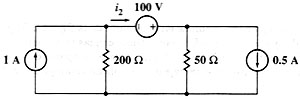

Question.
Given the following circuit, find the value of i2 and the consumed power P in all elements.

Solution.
Label nodes and elements. Define a variable containing circuit description. I used this description:
"j1,0,1,1; e1,2,1,100;
r1,1,0,200; r2,2,0,50; j2,2,0,0.5" àcirSimulate this circuit using direct current analysis.
sq\dc(cir)
Done
Ask for the current i2, which is the negative of the current through the voltage source. The name of the current through an element is the letter i followed by the name of the element.
-ie1
1.3
Ask for the consumed powers. The name of the power consumed in an element is the letter p followed by the name of the element.
pj1
60
This value is positive. This means that the source j1 is consuming power.
pe1
-130
This value is negative. This means that the source e1 is delivering power.
pr1
18
pr2
32
pj2
20
This value is positive. This means that the source j2 is consuming power.
Answer: This are the right values. You can verify that the summatory of powers in the circuit equals zero.
pj1+pe1+pr1+pr2+pj2=0
true